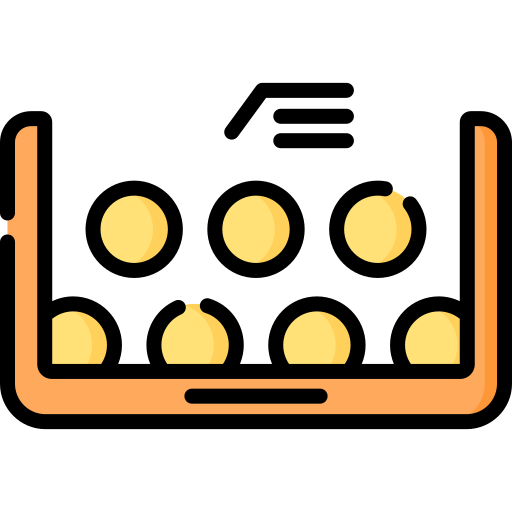
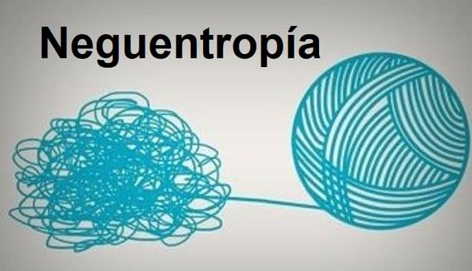
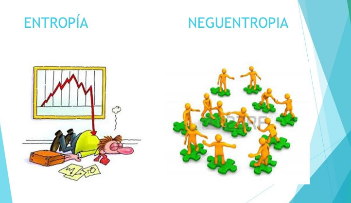

Son dos caracteristicas importantes de un sistema

Entropia
Es la tendencia natural de un sistema al desorden y la aleatoriedad. Cuando el
sistema alcanza un alto grado de entropía es propenso a desaparecer.
Mas informacion
Neguentropia
Existe un proceso mediante el cual es posible reducir la entropía denominado negentropía o entro-
pía negativa, en la que el sistema es capaz de modificarse para reabastecerse de la energía consumida.
Mas informacion


Relaciones entre partes y propiedades emergentes Entropía y neguentropia
Las relaciones entre las partes y las propiedades emergentes, así como los conceptos de entropía y negentropía, están relacionados en el contexto de la teoría de sistemas y la termodinámica. Aquí hay una explicación de cómo estos conceptos se conectan:
Sistemas y Propiedades Emergentes:
- Los sistemas están compuestos por partes o componentes interconectados que interactúan entre sí.
- Las propiedades emergentes son características o comportamientos del sistema que surgen como resultado de las interacciones entre sus partes, pero que no pueden explicarse solo por el estudio de las partes individuales.
Entropía:
-La entropía es un concepto de la termodinámica que se refiere a la medida del desorden o la falta de organización en un sistema.
-En un sistema aislado, la entropía tiende a aumentar con el tiempo, lo que se conoce como el segundo principio de la termodinámica. Esto significa que los sistemas tienden a evolucionar hacia estados de mayor desorden.
Negentropía o Entropía Negativa:
- La negentropía es un concepto que se utiliza para describir la inversión del proceso entrópico, es decir, la organización y la reducción del desorden en un sistema.
- En sistemas vivos y organizados, como los seres vivos y las organizaciones, a menudo se observa negentropía. Estos sistemas pueden mantener y aumentar su complejidad y organización interna a pesar de la tendencia natural hacia la entropía.
Ahora, aquí está la relación:
- Los sistemas vivos y organizados, como los seres vivos y las organizaciones humanas, son ejemplos de sistemas en los que la negentropía es evidente. A pesar de la tendencia natural hacia la entropía en el universo, estos sistemas pueden mantener su organización y aumentar su complejidad interna mediante la interacción y coordinación de sus partes.
- Las propiedades emergentes en sistemas biológicos y sociales, como la inteligencia, la cooperación, la adaptación, etc., son ejemplos de cómo la organización y la negentropía pueden surgir de las interacciones entre las partes de un sistema. Estas propiedades emergentes no pueden explicarse solo por el estudio de las partes individuales.
En resumen, la relación entre las partes y las propiedades emergentes, así como los conceptos de entropía y negentropía, demuestran cómo los sistemas vivos y organizados pueden desafiar la tendencia natural hacia el desorden a través de la organización y la cooperación de sus partes, lo que da lugar a propiedades emergentes únicas y complejas.
Mas informacion